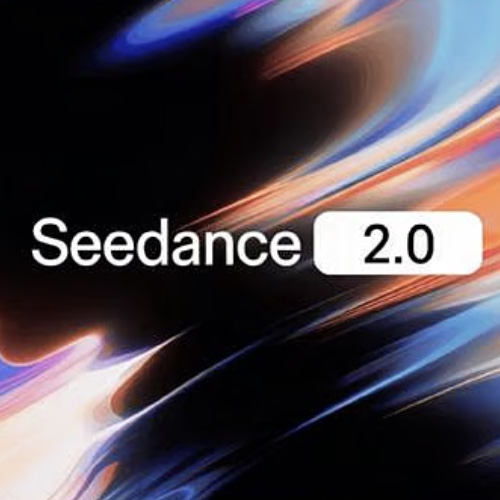
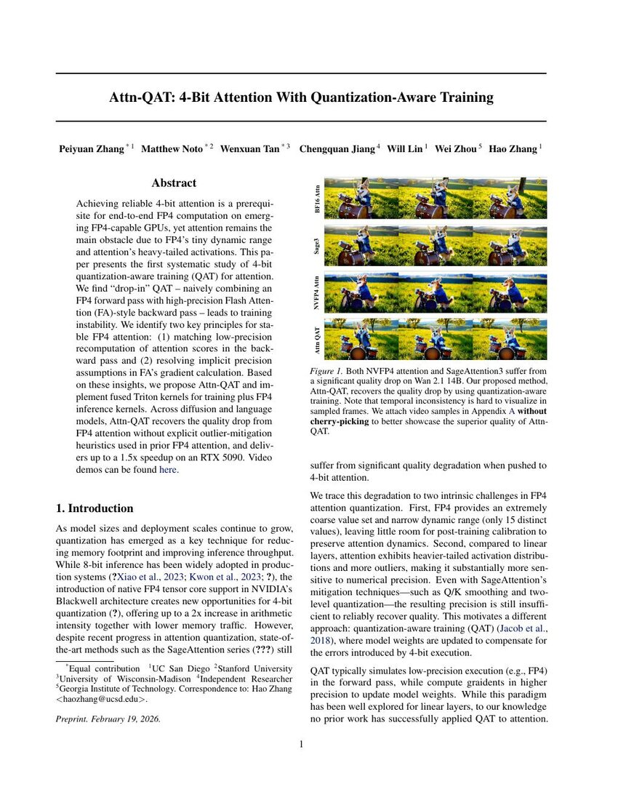
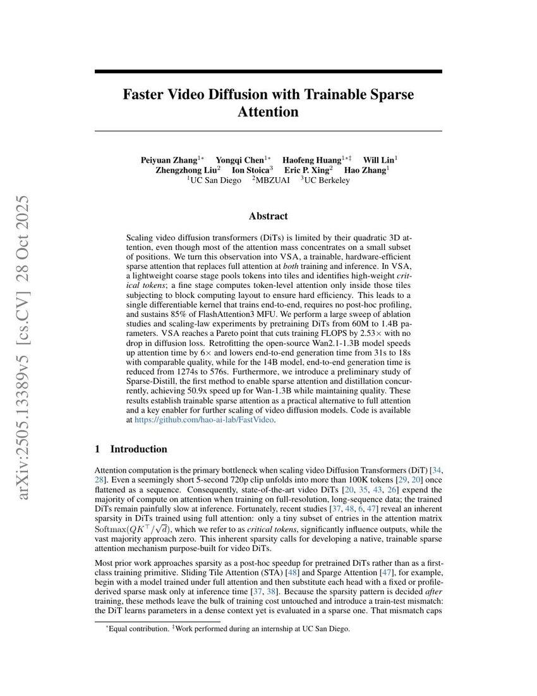
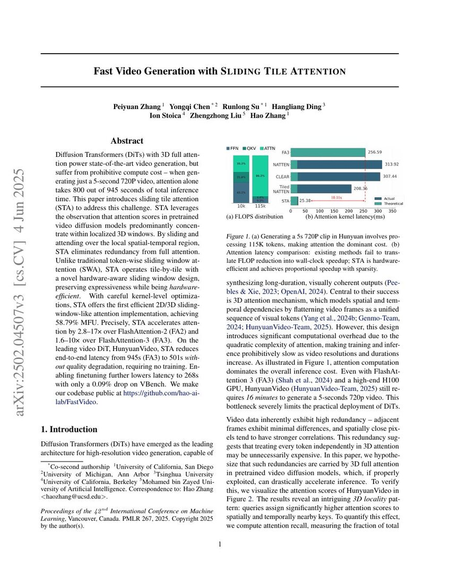
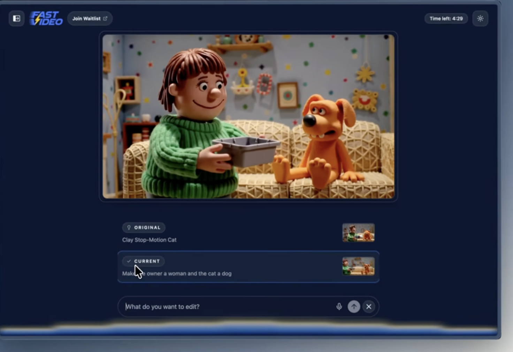
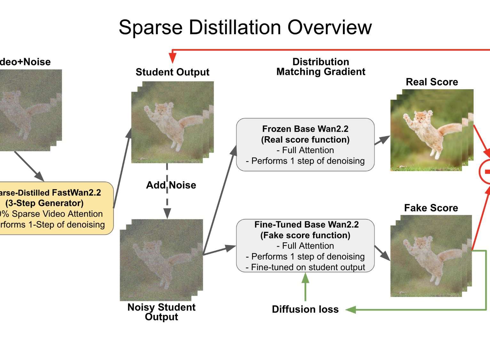
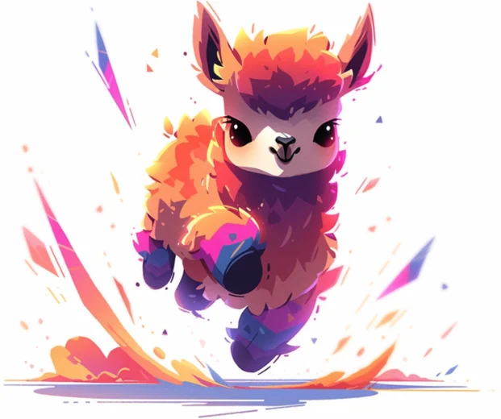
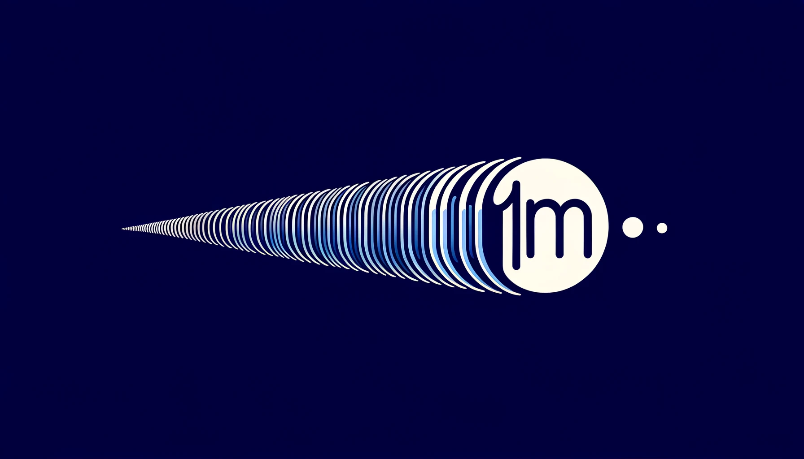

|
Perry (Peiyuan) Zhang I am a researcher at ByteDance Seed San Jose, on the Seedance core team working on pretraining. Our team is hiring for intern/full-time roles. Feel free to reach out. Before that, I was a PhD student at UC San Diego with Prof. Hao Zhang, a formative experience for which I am deeply grateful. I enjoy building scalable systems and exploring new ideas at the intersection of machine learning, vision, and efficiency. I believe that great ML scientists are, fundamentally, exceptional software engineers. Email / Github / Scholar / LinkedIn / Twitter / Hugging Face Last Updated: 2026 June |
{kind=link}
Projects |
FastVideo

Co-lead code / docs / blog A unified post-training and real-time inference framework for accelerated video generation, including sparse attention, distillation recipes, and deployable demos. |
|
|
 |
Seedance 2.0: Advancing Video Generation for World Complexity
ByteDance Seed, foundational contributor technical report, 2026 model page / launch / paper Native multimodal video generation for complex motion, prompt following, and controllable generation across text, image, video, and audio conditions. |
|
   |
Efficient Attention for Faster Video Diffusion
Peiyuan Zhang and collaborators ICML / NeurIPS, 2025-2026 Attn-QAT / VSA / STA A line of work on sparse, tiled, and quantization-aware attention mechanisms for faster and cheaper video diffusion transformers, with wide-scale adoption across industry. |
|
 |
Into the Dreamverse: Vibe Directing in FastVideo
FastVideo Team blog, 2026 blog / code A real-time video generation interface built on FastVideo for steering and revising generated videos through natural-language vibe directing. |
|
 |
FastWan: Generating a 5-Second Video in 5 Seconds via Sparse Distillation
FastVideo Team blog, 2025 blog / code A sparse distillation recipe for FastVideo that releases fast video generation models, training recipes, and datasets for reproducible acceleration work. |
|
 |
TinyLlama: An Open-Source Small Language Model

Peiyuan Zhang*, Guangtao Zeng*, Tianduo Wang, Wei Lu arXiv, 2024 code / models / paper Led the project to pretrain a 1.1B parameter Llama model on 3T tokens with a compact, widely reused training codebase. |
LMMs-Eval: Reality Check on the Evaluation of Large Multimodal Models

Kaichen Zhang*, Bo Li*, Peiyuan Zhang*, Fanyi Pu*, and collaborators arXiv, 2024 code / homepage / paper Co-led the initial development and release of LMMs-Eval, a one-for-all evaluation package for large multimodal models with broad task coverage and reproducible evaluation workflows. |
|
|
 |
EasyContext / Long Context Transfer from Language to Vision

Peiyuan Zhang*, Kaichen Zhang*, Bo Li*, Guangtao Zeng, and collaborators TMLR, 2025 code / models / paper Training recipes for million-token context extension and long-context transfer from language models to vision-language models. |
Publications* denotes equal contribution. Selected papers are listed below. |
| 2026 |
d3LLM: Ultra-Fast Diffusion LLM using Pseudo-Trajectory Distillation
Yu-Yang Qian, Junda Su, Lanxiang Hu, Peiyuan Zhang, Zhijie Deng, Peng Zhao, Hao Zhang ICML |
| 2026 |
Attn-QAT: 4-Bit Attention With Quantization-Aware Training
Peiyuan Zhang*, Matthew Noto*, Wenxuan Tan*, Chengquan Jiang, Will Lin, Wei Zhou, Hao Zhang ICML |
| 2025 |
Faster Video Diffusion With Trainable Sparse Attention
Peiyuan Zhang*, Yongqi Chen*, Haofeng Huang*, Will Lin, Zhengzhong Liu, Ion Stoica, Eric P. Xing, Hao Zhang NeurIPS |
| 2025 |
Fast Video Generation With Sliding Tile Attention
Peiyuan Zhang, Yongqi Chen, Runlong Su, Hangliang Ding, Ion Stoica, Zhengzhong Liu, Hao Zhang ICML |
| 2025 |
Long Context Transfer From Language To Vision
Peiyuan Zhang*, Kaichen Zhang*, Bo Li*, Guangtao Zeng, Jingkang Yang, Yuanhan Zhang, Ziyue Wang, Haoran Tan, Chunyuan Li, Ziwei Liu TMLR |
| 2025 |
LLaVA-OneVision: Easy Visual Task Transfer
Bo Li, Yuanhan Zhang, Dong Guo, Renrui Zhang, Feng Li, Hao Zhang, Kaichen Zhang, Peiyuan Zhang, Yanwei Li, Ziwei Liu, Chunyuan Li TMLR |
| 2025 |
Temporal Reasoning Transfer From Text To Video
Lei Li, Yuanxin Liu, Linli Yao, Peiyuan Zhang, Chenxin An, Lean Wang, Xu Sun, Lingpeng Kong, Qi Liu ICLR |
| 2025 |
EgoLife: Towards Egocentric Life Assistant
Jingkang Yang, Shuai Liu, Hongming Guo, Yuhao Dong, Xiamengwei Zhang, Sicheng Zhang, Peiyuan Zhang, and collaborators CVPR |
| 2023 |
One Network, Many Masks: Towards More Parameter-Efficient Transfer Learning
Guangtao Zeng*, Peiyuan Zhang*, Wei Lu ACL |
| 2022 |
Better Few-Shot Relation Extraction With Label Prompt Dropout
Peiyuan Zhang, Wei Lu EMNLP |